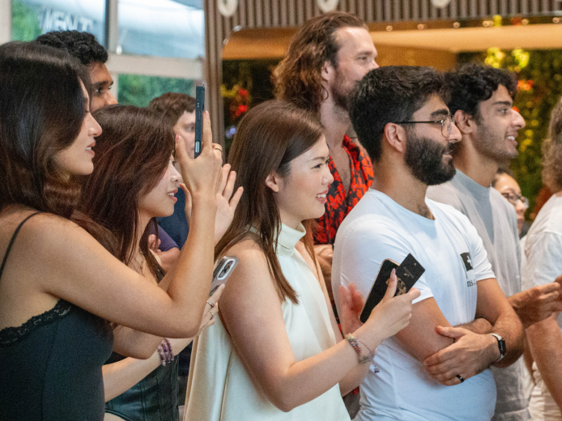

There is a guy running a live-in school for people who want to build new societies. It is inside a Chinese ghost city in Malaysia.
Forest City was supposed to be a hundred-billion-dollar Belt and Road project, a city built from nothing on four artificial islands off the coast of Johor. The road signs are in Chinese. The schools teach Mandarin. It was designed for wealthy Chinese buyers who wanted to park money offshore, away from capital controls and political risk back home.
Then Xi Jinping capped foreign currency outflows at fifty thousand dollars per year. The buyers disappeared. By 2023, Forest City had eight thousand residents instead of the projected seven hundred thousand. The reclaimed land started sinking. Buildings cracked. The developer, Country Garden, defaulted on eleven billion dollars in offshore bonds. Foreign Policy called the whole thing a "massive boondoggle."
The project was not even supposed to exist where it does. The area is protected as an Environmentally Sensitive Area Rank 1, home to the largest seagrass meadow in Malaysia and the Pulai River Mangrove Forest Reserve, a wetland of international importance under the Ramsar Convention. An environmental impact assessment acknowledged that the seagrass ecosystem had been split in two and would be heavily impacted. Silt curtains were supposed to protect the buffers. Photographs showed they were absent.
Now Balaji Srinivasan runs something called Network School out of a luxury hotel in the middle of this empty development.
For fifteen hundred dollars a month you get a room, meals, gym access, WiFi, cleaning, and a community of people who are all living there full-time, building startups, and earning crypto. The program has a fitness culture that starts on day one with shirtless fitness tests. Someone takes your photo in front of everyone. Your results get logged publicly and retested monthly. Bryan Johnson — the guy trying to live forever — designed the nutrition and workout protocol.

One woman brought her one-and-a-half-year-old son and signed a year-long contract. She said she chose it because she never has to cook or clean again. She had tried to live a normal life and it did not work. She wanted to be around people trying to build something different.
"I am not a tree. Life is a series of trial and error."
The first cohort ran from September to December 2024. One hundred twenty-eight people from more than eighty countries got in out of four thousand applicants. The second cohort started in March 2025 with two hundred fifty-six members living there for a full year.
Balaji's roadmap is methodical. Version three will be a permanent campus. Version four will be open-source blueprints so anyone can clone the model anywhere. Version five is when alumni start founding their own societies. He compares the whole project to Harvard in 1636 — the idea of founding a new institution before the current one even existed, back when there was no template for what a university should be.
Meanwhile, Malaysia just made the entire sinking island a tax-free special financial zone.
So you have Mandarin road signs and buildings sinking into seagrass beds and shirtless fitness tests and a live-in school prototyping new countries inside a defaulted hundred-billion-dollar Chinese boondoggle that was built on protected wetlands and is now a tax-free zone. The signage is still in Chinese. The seagrass is still split in two. The land is still subsiding. And a few hundred people are living in a luxury hotel trying to figure out how to start new societies from first principles.